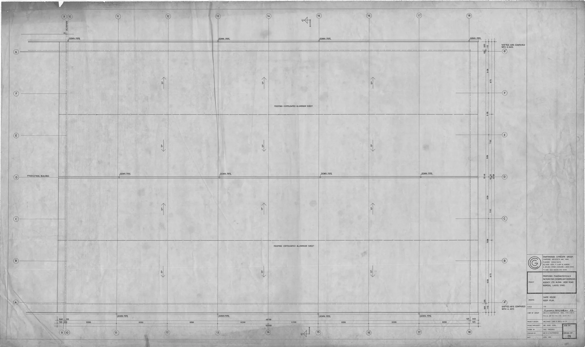

This guide provides professional buyers with essential insights into sourcing Hyalaze wholesale, covering documentation, handling, and shipping essentials.
For clinics, spas, resellers, and distributors, sourcing Hyalaze wholesale can present unique challenges. Understanding the intricacies of documentation, handling, and shipping is crucial to ensure a smooth procurement process. Buyers often face uncertainty regarding the best practices for ordering, which can lead to delays and complications in their supply chain.
This guide aims to clarify the essential steps involved in wholesale Hyalaze sourcing, providing practical insights that will help professional buyers navigate the complexities of purchasing this important product. By following the guidelines outlined here, you can streamline your procurement process and ensure that you have the necessary supplies on hand to meet your business needs.
Key Takeaways
- Accurate documentation is vital to avoid customs delays and ensure smooth delivery.
- Evaluate suppliers based on their communication, responsiveness, and reliability.
- Consider minimum order quantities (MOQ) to optimize your purchasing strategy and budget.
- Proper packing is essential to prevent damage during transit and maintain product integrity.
- Plan for reorder cycles to maintain consistent inventory levels and avoid stockouts.
What this guide covers
- Understanding Hyaluronidase
- Identifying relevant buyers
- Comparison criteria for suppliers
- Checklist for requesting quotes
- Logistics and documentation considerations
- MOQ and reorder planning
- Frequently asked questions
What buyers should understand first

Hyaluronidase, commonly known as Hyalaze, is an enzyme that facilitates the dispersion and absorption of other injected substances. It is often utilized in aesthetic and medical applications to enhance the effectiveness of treatments. For clinics and spas, having a reliable source for Hyalaze is essential to ensure that they can provide high-quality services to their clients. Buyers should be aware of the various forms and concentrations available, as well as the importance of sourcing from reputable suppliers to ensure product integrity and safety.
Understanding the regulatory landscape is also critical. Different regions may have varying regulations regarding the importation and use of Hyaluronidase. Buyers should familiarize themselves with these regulations to ensure compliance and avoid potential legal issues. This knowledge not only helps in sourcing but also in maintaining a good standing with regulatory bodies.
Which buyers is this most relevant for?
This guide is particularly relevant for professional buyers in clinics, spas, and distribution companies that require Hyalaze for their services. Buyers in these sectors must consider their order planning needs, such as anticipated patient volume, treatment schedules, and inventory turnover rates. For example, a busy aesthetic clinic may need to order larger quantities to meet high demand, while a smaller spa may opt for smaller, more frequent orders.
Additionally, resellers and distributors must evaluate their customer base and market demand. Understanding how to effectively source Hyalaze can help these businesses maintain a steady supply while optimizing costs and ensuring compliance with local regulations. Each buyer scenario may require a tailored approach to sourcing, emphasizing the need for flexibility and strategic planning.
How to compare options before ordering
When comparing wholesale Hyalaze options, consider the following criteria:
- Product Type: Ensure you are selecting the correct formulation and concentration for your needs. Different applications may require different types of Hyaluronidase.
- Brand Reputation: Research the supplier's reputation and the quality of their products. Look for reviews and testimonials from other buyers.
- Packaging: Evaluate the packaging options available to ensure they meet your handling and storage requirements. Proper packaging can prevent contamination and degradation.
- Batch and Expiry Visibility: Confirm that suppliers provide clear information on batch numbers and expiry dates to manage inventory effectively.
- Supplier Communication: Assess the responsiveness and clarity of the supplier's communication. A reliable supplier should be easy to reach and provide timely updates.
- Destination Requirements: Consider any specific shipping requirements based on your location, including customs documentation and import regulations.
Buyer checklist before requesting a quote


- Define your required quantities and product specifications, including desired concentrations and formulations.
- Confirm your shipping address and any special handling instructions to ensure safe delivery.
- Gather necessary documentation for import/export if applicable, including licenses or permits.
- Check for any local regulations regarding the purchase of Hyaluronidase to avoid compliance issues.
- Prepare questions regarding lead times, payment terms, and return policies.
- Verify the supplier's ability to provide ongoing support and communication throughout the procurement process.
Shipping, packing and documentation questions
Logistics play a critical role in the successful procurement of Hyalaze. Here are some key considerations:
- Ensure that the supplier provides adequate packing to protect the product during transit, including temperature control if necessary.
- Request information on shipping methods and expected delivery timelines to plan your inventory accordingly.
- Clarify what documentation will be provided with the shipment, including invoices, certificates of analysis, and any necessary customs paperwork.
- Understand any customs requirements that may apply to your order, including tariffs or import duties.
- Inquire about the supplier's policies for handling damaged or lost shipments to mitigate risks.
MOQ, quotation and reorder planning
When planning your orders, it is important to consider the minimum order quantities (MOQ) set by suppliers. This can impact your budget and inventory management strategies. Here are some tips:
- Determine your typical usage rates to inform your order quantities, ensuring you do not overstock or understock.
- Discuss potential discounts for larger orders with your supplier, which can help reduce costs.
- Plan for seasonal fluctuations in demand to avoid stockouts during peak times.
- Keep track of lead times to ensure timely reorders, especially if you have a high turnover rate.
- Contact SOLA to confirm current availability and obtain a wholesale quotation tailored to your needs.
FAQ
What is Hyalaze used for?
Hyalaze is primarily used to enhance the effectiveness of other injected substances in aesthetic and medical treatments.
How can I ensure the quality of Hyalaze?
Source from reputable suppliers and request documentation such as certificates of analysis to verify quality.
What are the typical MOQs for Hyalaze?
Minimum order quantities vary by supplier; it’s important to discuss this during your sourcing process to align with your needs.
How should I handle Hyalaze during shipping?
Ensure proper packing to prevent damage and confirm shipping methods that maintain product integrity throughout transit.
Can SOLA assist with my Hyalaze sourcing needs?
Yes, SOLA can provide support and guidance for your wholesale Hyalaze sourcing, including quotations and availability.
Contact SOLA for wholesale quotation via WhatsApp.
Planning a wholesale request?
Send product names, quantities and destination for a tailored discussion.
Contact SOLA on WhatsApp →General educational content for professional buyers. Not medical, legal, regulatory or import advice.
Image sources: Ijede Rd Ikorodu Pharmaceuticals Factory For Crsterlight Overseas Agency Ltd Nigeria 1985 Designed by Michael Olutusen Onafowokan Warehouse Roof Plan Drwg05 012.jpg by Onafowokan Michael Olutusen (CC BY-SA 4.0, 3937x2341 px).